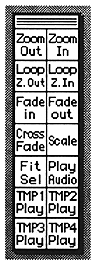

Return to previous page ｜ Return to menu ｜ Go to next page
-
■ Control window
- This section explains each icon in the control window.

-
Loop Zoom Out
- Reduce the Loop Edit screen.
-
Loop Zoom In
- Loop Edit screen is enlarged.
●Fit Selection
- Zooms in on the selected part.
-
● Other icons
- Other icons are processed in the same way as when the menu bar is selected.
Return to previous page ｜ Return to menu ｜ Go to next page